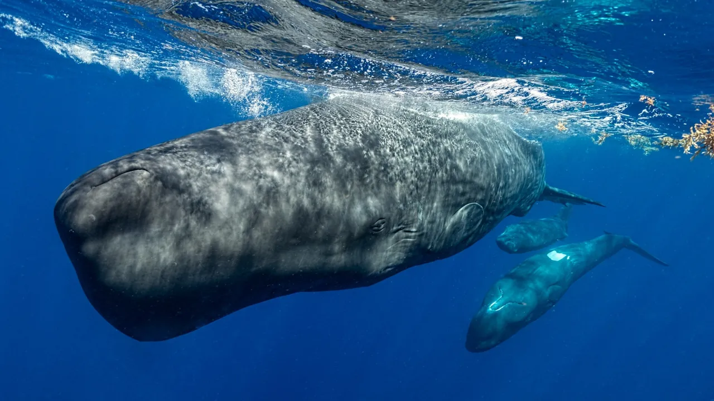
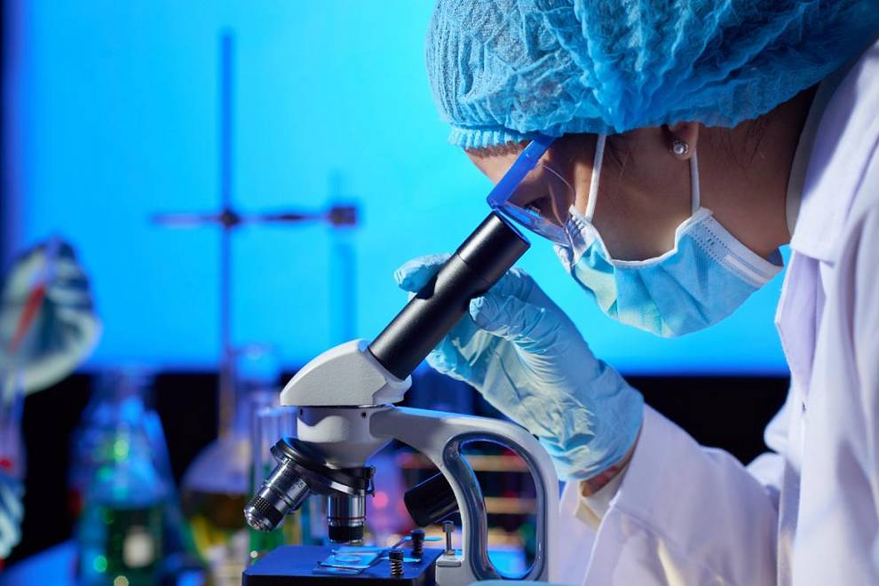
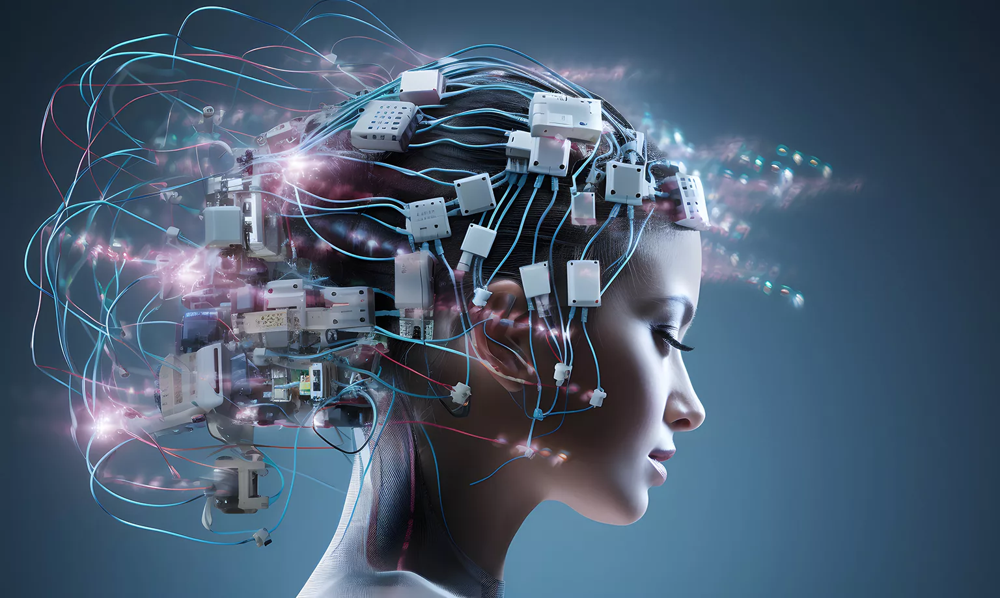
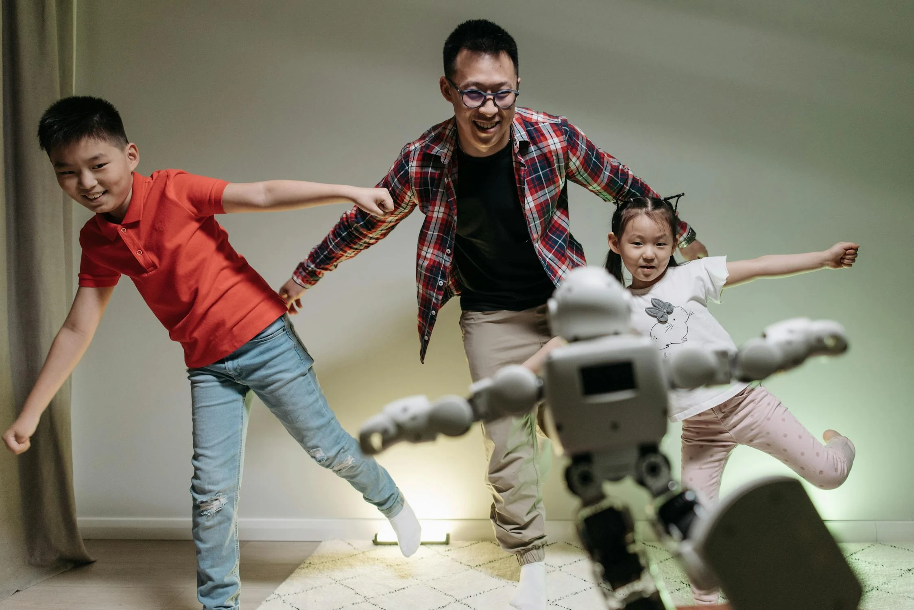
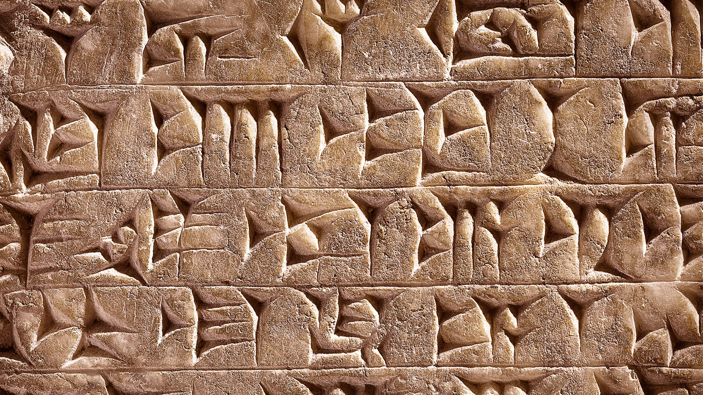
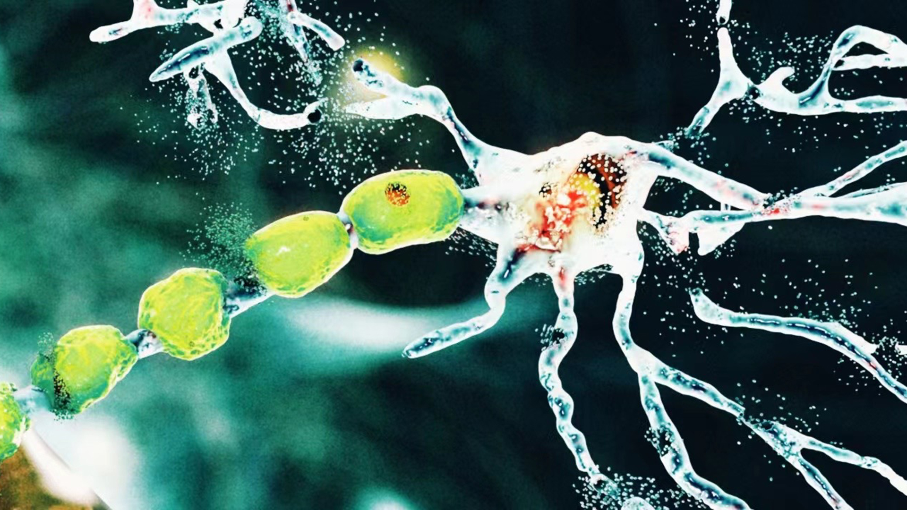

AI for Animal Communication (Earth Species Project)
Status: In development.
The Earth Species Project (ESP) aims to decipher the communication systems of various animal species using AI, analyzing large amounts of acoustic data to understand their "languages." The focus is on species such as whales, dolphins, and birds that emit complex signals.
Future Impact: If successful, this project could revolutionize animal conservation by enabling more direct communication between humans and animals, facilitating the protection of endangered species and promoting a more respectful interaction with wildlife.
AI for Oceans (Google and Global Fishing Watch)
Status: In progress.
This project uses AI and satellites to monitor fishing activity and detect illegal fishing in oceans. Algorithms analyze the behavioral patterns of vessels to identify suspicious activities.
Future Impact: It could be crucial in protecting marine biodiversity and ensuring the sustainability of fisheries, changing how global marine resources are managed.
Project CETI (Cetacean Translation Initiative)
Status: Research phase.
Project CETI is using AI to attempt to translate the language of sperm whales, analyzing millions of recordings to understand their communication.
Future Impact: If successful, this project could be a significant breakthrough in understanding animal intelligence and communication.

AI for Cancer Diagnosis with Medical Imaging (Google Health)
Status: In development.
Google Health is working on AI systems to analyze medical images and detect cancers, such as breast and skin cancer, with greater accuracy than current medical diagnostics. The AI is trained with vast databases of patient images to improve diagnostics.
Future Impact:It could significantly enhance early cancer detection, saving lives and providing faster and more accurate diagnoses, which would also reduce treatment costs.

Neuralink (Brain-Machine Interfaces)
Status: In experimental phase.
Neuralink, Elon Musk's company, is developing brain implants that allow direct interaction between the brain and technological devices. This type of AI could be useful in treating neurological disorders and even allow paralyzed individuals to control devices with their thoughts.
<>Future Impact:It could transform neurology and the way we interact with technology, helping people with motor disabilities and brain diseases regain abilities and improve their quality of life.

AI for Climate Change Modelling (AI4Earth by Microsoft)
Status:Active.
The AI4Earth initiative by Microsoft uses AI to model climate change and predict its effects on specific regions, assisting governments and communities in mitigating and adapting to climate change.
Future Impact: It will provide advanced tools for resource planning, improving the management of agriculture, biodiversity, and cities in response to the impacts of climate change.

Humanoid Robotics with AI for Assistance (Tesla Project: Optimus)
Status:In development.
Optimus is the humanoid robot being developed by Tesla. It will be equipped with AI to perform repetitive or dangerous tasks in human environments, such as factories or even household tasks in the future.
Future Impact: It could transform the manufacturing industry and the way we live, freeing humans from tedious or dangerous jobs and enhancing productivity across various industries.

AI for Deciphering Ancient Languages (DeepMind)
Status:Experimental phase.
DeepMind is applying AI to decipher undecoded ancient languages, such as Linear A from the Minoan civilization. The system analyzes fragments of inscriptions to find linguistic patterns.
Future Impact:This advancement could change how we understand ancient civilizations, revealing aspects of cultures that have been inaccessible for centuries.

AI for Agricultural Robots (FarmWise Labs)
Status:In development.
FarmWise Labs is developing agricultural robots equipped with AI to optimize the use of pesticides and fertilizers, and to remove weeds without the need for herbicides. These robots are already operating on some farms.
Future Impact:Agriculture will become more sustainable and efficient, reducing environmental impact, costs, and improving crop quality through the use of AI.

AI for Generating Personalized Drugs (Insilico Medicine)
Status: In progress.
Insilico Medicine uses AI to design personalized drugs tailored to patients' genetic profiles. AI helps predict the efficacy of compounds, accelerating the drug discovery process.
Future Impact:This could revolutionize personalized medicine by providing treatments specifically designed for each patient, improving efficacy and reducing side effects.
